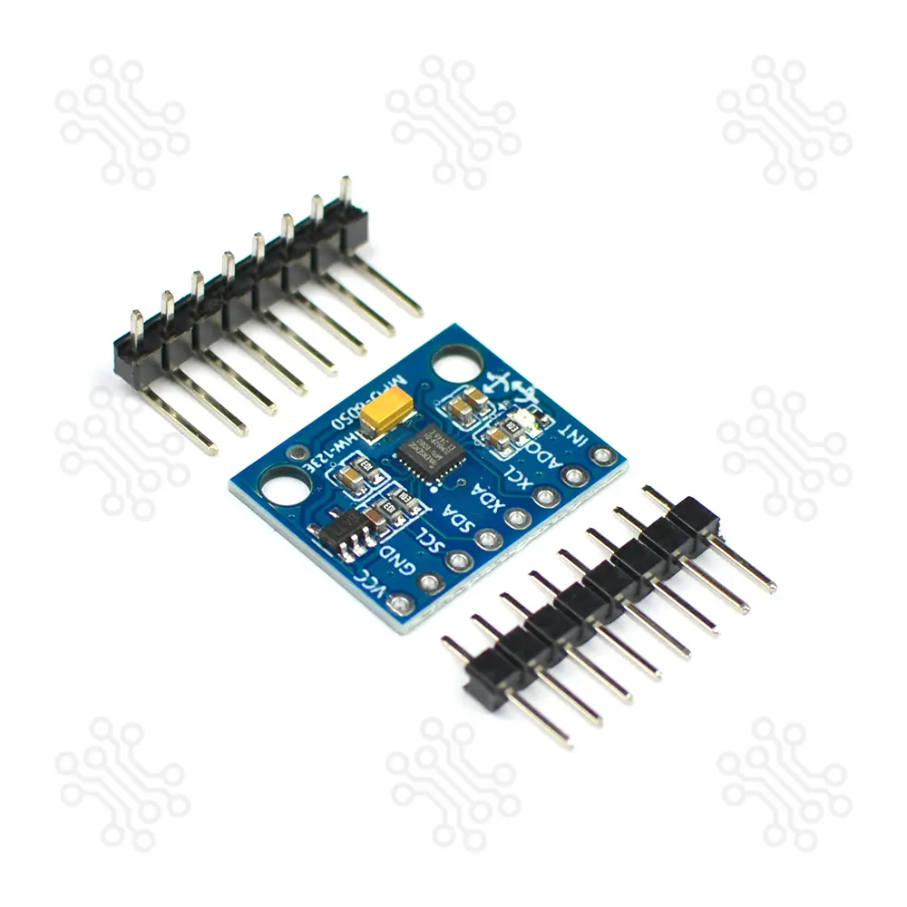

MPU6050 6-DOF Accelerometer & Gyroscope Module
The MPU6050 is a groundbreaking 6-axis motion tracking device that combines a 3-axis gyroscope, a 3-axis accelerometer, and a Digital Motion Processor (DMP) all housed in a single, incredibly compact package. It is the go-to sensor for electronics enthusiasts, researchers, and professional engineers across Bangladesh who are looking to implement precise motion sensing into their projects. The sensor features an onboard GY-521 breakout board, which provides straightforward access to all critical pins including I2C interfaces and power lines. By integrating both the accelerometer and the gyroscope on the same silicon die, the MPU6050 effectively eliminates the cross-axis alignment problems that frequently plague multi-chip solutions, resulting in consistently accurate readings.
One of the standout features of the MPU6050 is its embedded Digital Motion Processor (DMP). This advanced onboard processor handles complex motion fusion algorithms, offloading the heavy computational burden from the host microcontroller (such as an Arduino or ESP32). This means you can get quaternion, Euler angle, or gravity vector outputs directly from the sensor, saving precious processing cycles for other vital tasks in your project. Whether you're building a self-balancing robot, a sophisticated drone, an inertial navigation system, or a gesture-controlled wearable device, this module provides the precise data you need with minimal latency.
Interfacing with the MPU6050 is remarkably simple thanks to its standard I2C communication protocol. It operates on a supply voltage of 3V to 5V, making it highly compatible with both 3.3V logic (like the ESP32, NodeMCU, and Raspberry Pi) and 5V logic (like the Arduino Uno and Mega). The module also features a built-in Low Drop-Out (LDO) voltage regulator to ensure stable power delivery to the core IC. The sensor includes a user-programmable gyro full-scale range of ±250, ±500, ±1000, and ±2000 degrees per second (dps), as well as a user-programmable accelerometer full-scale range of ±2g, ±4g, ±8g, and ±16g, giving you unparalleled flexibility depending on the dynamic requirements of your application.
When you purchase the MPU6050 from ElectroMart BD, you are guaranteed a high-quality, fully tested component that meets the stringent demands of modern electronic design. We ensure fast and reliable delivery nationwide, so you can keep your project timelines on track. Enhance your robotics, virtual reality, and smart devices with the industry-standard motion tracking capabilities of the MPU6050.
Key Features:
- 6-axis motion tracking capability (3-axis Gyroscope + 3-axis Accelerometer)
- Onboard Digital Motion Processor (DMP) for sensor fusion
- I2C communication interface
- Built-in 16-bit ADCs for high accuracy data conversion
- Compact GY-521 breakout board design
Technical Specifications:
Common Project Applications:
- Quadcopter and Drone Flight Controllers: Essential for maintaining stability and performing complex aerial maneuvers.
- Self-Balancing Robots: Provides the precise tilt and acceleration data required for real-time PID balancing algorithms.
- Virtual Reality (VR) and Augmented Reality (AR) Headsets: Tracks head movements to update visual displays with minimal latency.
- Gesture Recognition Systems: Enables wearable devices to interpret hand and arm movements for intuitive human-computer interaction.
- Inertial Navigation Systems (INS): Used in robotics to track position and velocity over time when GPS is unavailable or unreliable.
- Vibration Analysis and Structural Health Monitoring: Capable of detecting minute vibrations in industrial machinery and buildings.
- Sports and Fitness Tracking: Monitors athletic performance by tracking acceleration, rotation, and dynamic forces during exercise.
- Smartphone and Tablet Orientation: Automatically detects device orientation to switch between portrait and landscape modes.
Why Buy from ElectroMart BD?
- 100% Quality Tested MPU6050 6-DOF Accelerometer & Gyroscope Module
- Best price guarantee in Bangladesh (৳370)
- Fast and reliable delivery across all 64 districts
- Dedicated technical & project guidance via WhatsApp